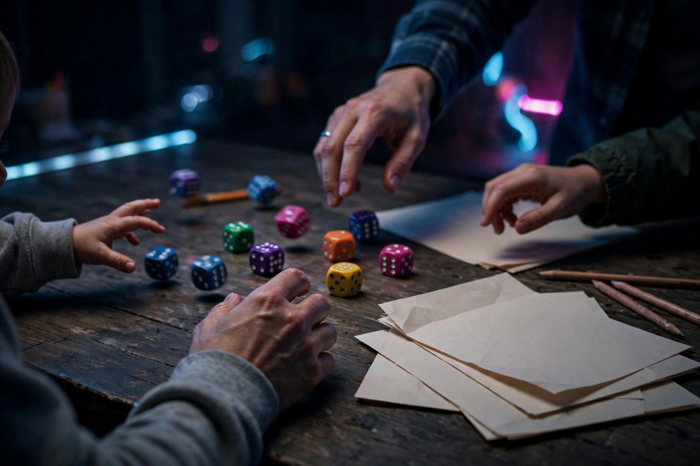

Dice games for family night

Dice are the cheapest game night a family can own. No board to set up, no deck to shuffle into order, no app to update — just a handful of dice, a pencil, and a score sheet torn from a notebook. But "dice game" covers three very different evenings. One game asks a player to solve a small puzzle alone while everyone else watches. One turns every roll into a dare. One keeps the whole table scoring at the same time, so nobody ever waits. Picking the right one for your family's patience level matters more than picking the most famous name, so this guide compares three well-documented dice games — Yahtzee, Farkle, and Qwixx — on the things that actually decide a family night: downtime, risk, and what you need in the drawer before you start.
The three games at a glance
Every specification below was checked against publisher or retailer listings on October 16, 2026. Prices move, so treat the two price checks as a dated snapshot, not a promise.
| Game | Players | Ages | Time | Dice needed | Downtime | Core decision |
|---|---|---|---|---|---|---|
| Yahtzee | 2 or more | 8+ | 13 rounds | 5 | High — one roller at a time | Which category to sacrifice |
| Farkle | 2 or more | 8+ | About 30 min | 6 | High — one roller at a time | Bank the points or roll again |
| Qwixx | 2–5 | 8+ | 15 min | 6 (2 white, 4 colored) | None — everyone scores on every roll | Which number to cross off, and which to skip forever |
Two dated price checks from October 16, 2026: Qwixx was listed at $12.99 (USD) at The Toy Maven, and the PlayMonster Farkle set was listed at $22.99 (USD) at Belk. Yahtzee needs no purchase at all if the drawer already holds five dice — the score categories fit on a single hand-drawn grid, which is the real lesson of this table: the entry cost of a dice night is a pencil.
Yahtzee: the category puzzle
Yahtzee, from Hasbro, is built around thirteen rounds and a score card of named categories. On a turn, a player rolls five dice up to three times, deciding after each roll which dice to keep and which to throw back. At the end of the turn, the roll must be written into one unused category — a full house, a straight, three or four of a kind, or simply the total of all the fives showing. A Yahtzee — all five dice the same — scores 50 points, the richest single box on the card, and rolling a second one earns a 100-point bonus. After thirteen rounds, the highest total wins.
The hidden teaching game inside Yahtzee is sacrifice. Every category can be used only once, so a mediocre roll early forces a genuine decision: write a small score in a valuable box, or take a zero in a box that was unlikely to pay off anyway. That is a real strategic idea — opportunity cost — wearing a party game's clothes, and it is why the game still works for adults. The cost is downtime. With four or five players, each person watches several three-roll turns between their own, and younger kids feel that wait the most. Yahtzee suits a table that enjoys watching and advising; it frustrates a table that needs to be touching dice every minute.
Farkle: pure push-your-luck
Farkle strips the puzzle away and keeps only the dare. PlayMonster's official rules set it at ages 8 and up for 2 or more players, with six dice and a score pad in the box. On a turn, the player rolls all six dice, sets aside at least one die that is worth points, and then faces the game's only question: stop and bank the running total, or roll the remaining dice and try to grow it. Setting aside all six dice earns the right to roll all six again and keep building. But a roll that produces no scoring die at all is a Farkle — the entire running total for that turn is lost.
That single rule makes Farkle the loudest game in this guide. Every turn has a moment where the table is chanting for one more roll while the roller does the math of greed. It also makes Farkle the best teaching tool in the set, because the bank-or-roll decision is visible, repeated, and priced in points a child can count. The same downtime warning applies as with Yahtzee — one roller at a time — but turns are shorter and the spectacle of a Farkle wiping out a big total keeps spectators involved. The boxed set was listed at $22.99 (USD) at Belk on October 16, 2026, though six loose dice and a notebook play the identical game.
Qwixx: nobody waits for a turn
Qwixx, from Gamewright, solves the downtime problem by design. It plays in about 15 minutes for 2 to 5 players, ages 8 and up, using six dice — two white and one each in the four colors printed on the score sheet. On every roll, all players may cross off the total of the two white dice in one of their rows, and the active player may also use a colored die. The catch is direction: numbers in a row must be crossed off from left to right, and any number skipped along the way can never be crossed off later. The more numbers crossed off in a row, the more that row scores.
Because everyone can score on every roll, there is no dead time at all — the dice-games roundup at Yahtzee.org.uk makes the same point, describing Qwixx as a blend of bingo and Yahtzee where a player ticks off a colored number by adding a white die to the matching colored die. The decisions are quieter than Farkle's but constant: crossing off a number now may permanently block two better numbers behind it. For families with a restless eight-year-old, or a grandparent who hates sitting out, Qwixx is the pick of the three. It was listed at $12.99 (USD) at The Toy Maven on October 16, 2026, and it is the one game here that cannot be fully improvised from loose dice, because the colored rows and colored dice are the mechanism.
Bank or roll? A decision framework for young players
Push-your-luck games collapse if a child treats every roll as free. Agree on this framework before the first Farkle game, and apply the same thinking to Yahtzee's third roll:
- Name the bank number out loud. Before a turn starts, the roller says a total at which they will stop — "anything over this, I bank." Deciding in advance beats deciding mid-cheer, when the table is shouting for one more roll.
- Count the dice, not the points. The fewer dice left to roll, the worse the odds of scoring with them. A big running total held with only one or two dice left to roll is a bank, almost every time.
- Price the loss in turns. Ask one question: "If this roll fails, how many good turns does it erase?" When the answer is "my best turn of the night," the lesson lands better than any lecture about probability.
- Let the Farkle happen once. A wiped-out total teaches more than a warning. Debrief it in one sentence — "the points were real until the last roll" — and play on.
Run a dice night in four steps
This procedure suits a mixed-age table and finishes inside an hour:
- Start with Qwixx (15 minutes). Everyone plays every roll, so nobody's first experience of the night is waiting.
- Move to Farkle and state the bank-or-roll framework before the first turn. Keep score on one shared sheet so the arithmetic is public.
- Finish with Yahtzee if energy is still high — its thirteen rounds give the night a natural, countable ending before bedtime.
- Close by naming one decision, not the winner. Each player names the roll they would take back. Success looks like this: the argument on the way to bed is about a choice, not about who won.
FAQ
What is the best dice game for a family with an impatient kid? Qwixx. Every player can score on every roll, a game takes about 15 minutes, and there is no turn to wait for.
How many dice does a family need to start? Five dice cover Yahtzee, six cover Farkle. Only Qwixx needs its own box, because its colored dice and score rows are the game.
Which game teaches the most math? Yahtzee teaches category thinking and sacrifice across thirteen rounds; Farkle teaches risk in its purest form — bank a real total or gamble it on the next roll.